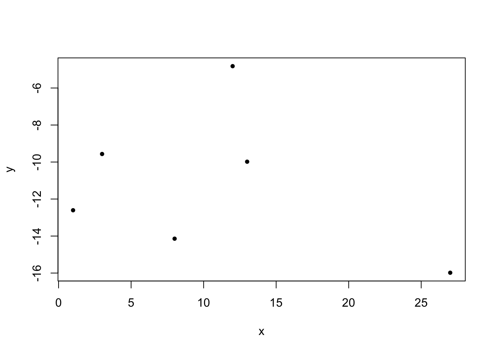

In dieser Lehrveranstaltung werden die Grundlagen der statistischen Programmierumgebung R vermittelt. In den ersten Einheiten werden wichtige Eigenschaften und Datentypen eingeführt, und erst danach werden elementare Konzepte der Datenanalyse (Importieren von Daten, deskriptive Statistiken, Erzeugen von Grafiken) sowie einfache statistische Modelle (Korrelation, lineare Regression, Mittelwertvergleich) beschrieben.
Was ist R?
R ist eine auf Datenanalyse und Statistik spezialisierte Programmiersprache. Mit spezialisierten Programmiersprachen kann man manche Dinge schneller, besser, eleganter oder kürzer lösen als mit universellen Programmiersprachen. Im Gegensatz dazu ist man mit universellen Programmiersprachen (wie beispielsweise Python) aber nicht auf ein relativ spezifisches Gebiet eingeschränkt. Mit Python kann man nicht nur Datenanalysen, numerische Berechnungen und statistische Auswertungen durchführen, sondern auch Webanwendungen oder interaktive Programme mit grafischen Oberflächen relativ einfach erstellen – etwas, das mit R eher schwierig oder umständlich ist.
Tipp
Es ist wichtig, für ein gegebenes Problem eine geeignete Programmiersprache zu finden. Wenn das Problem den Bereichen Datenanalyse oder statistische Modellierung zugeordnet werden kann, dann ist R sehr wahrscheinlich eine ausgezeichnete Wahl.
R kann man wie folgt charakterisieren:
Open Source (nicht nur kostenlos, sondern offen einsehbarer Quellcode)
R ist mittlerweile sehr weit verbreitet. Auch in verschiedenen Beliebtheitsranglisten zählt R regelmäßig zu den populärsten Programmiersprachen (z.B. PYPL, IEEE Spectrum Top Programming Languages und TIOBE). Das ist besonders bemerkenswert, da R keine universelle Sprache ist und damit mit Abstand die beliebteste statistische Programmiersprache, weit vor kommerziellen Statistikpaketen wie SPSS, Stata und Statistica.
In der Praxis ist die Popularität einer Programmiersprache durchaus relevant, denn je größer und aktiver die Community einer Sprache ist, desto einfacher wird es, bestehende Lösungen für Probleme zu finden oder Antworten auf neue Fragen zu bekommen.
Wie sieht R-Code aus?
R bedient man, indem man Textbefehle in der sogenannten Console eingibt. Statistische Berechnungen werden daher nicht wie z.B. in SPSS üblich durch Navigieren in einer grafischen Oberfläche durchgeführt. Zwar gibt es in SPSS ebenfalls die Möglichkeit, eine sogenannte Syntax zu verwenden, um Analysen per Code auszuführen. Im Gegensatz zu R ist dies in SPSS jedoch optional – die meisten Anwenderinnen und Anwender nutzen ausschließlich die grafische Oberfläche und verzichten auf die Syntax. In R hingegen ist die Arbeit mit Code die einzige Möglichkeit, Analysen durchzuführen. Dies ist aber keineswegs ein Nachteil, sondern hat ganz im Gegenteil mehrere Vorteile – insbesondere wird die Datenanalyse dadurch automatisch reproduzierbar, weil diese vollständig durch die verwendeten Befehle definiert ist.
Typische Ein- und Ausgaben in R sehen beispielsweise wie folgt aus:
x =c(1, 3, 8, 12, 13, 27)mean(x)
[1] 10.66667
sd(x)
[1] 9.309493
set.seed(1)y =-0.1* x +rnorm(6, mean=-10, sd=4)cor.test(x, y)
Pearson's product-moment correlation
data: x and y
t = -0.66124, df = 4, p-value = 0.5446
alternative hypothesis: true correlation is not equal to 0
95 percent confidence interval:
-0.8969629 0.6677722
sample estimates:
cor
-0.3139076
plot(x, y, pch=20)

In diesen Unterlagen werden R-Befehle in grauen Kästchen gezeigt, während direkt darunter die Ergebnisse der Befehle folgen. Im Moment sind die gezeigten Beispiele vielleicht noch vollkommen unverständlich, aber im Laufe dieser Lehrveranstaltung werden wir all das (und noch einiges mehr) kennenlernen und verstehen.
Installation
Bevor wir R verwenden können, müssen wir zwei Programme installieren, nämlich R und RStudio:
Alle relevanten Informationen zur Installation von R sind auf der offiziellen Website zu finden. Hier finden sich detaillierte Anleitungen für jede unterstützte Plattform. Der Download-Link befindet sich in der linken Spalte ganz oben unter “Download” – “CRAN”. Es ist sinnvoll, stets mit der aktuellsten Version von R zu arbeiten.
Obwohl die mit R mitgelieferte Oberfläche relativ komfortabel ist (und man auch komplett ohne grafische Oberfläche auskommen könnte), verwenden sehr viele Personen RStudio, um mit R zu arbeiten. RStudio ist “nur” eine grafische Oberfläche, d.h. es wird eine zuvor installierte R-Umgebung vorausgesetzt. Auch hier ist es ratsam, stets die aktuellste Version zu verwenden.
Erste Schritte
R kann als umfangreicher Taschenrechner verwendet werden. Um das auszuprobieren, starten Sie jetzt RStudio. Die Eingabe von mathematischen Ausdrücken ist intuitiv, ein sogenannter Prompt (das >-Symbol) in der Console (im linken Bereich des RStudio-Fensters) signalisiert, dass R bereit für Eingaben ist. Nach dem Eingeben eines Befehls und Bestätigen mit Enter wird das Ergebnis der Berechnung in der nächsten Zeile ausgegeben.
Die Grundrechenarten Addition, Subtraktion, Multiplikation und Division funktionieren wie erwartet:
13+7
[1] 20
1001-93
[1] 908
81*76
[1] 6156
1563/43
[1] 36.34884
Tipp
Aus Gründen der besseren Lesbarkeit sollten Leerzeichen vor und nach dem Operator eingefügt werden, also besser 13 + 7 und nicht 13+7. Für R ist zwar beides korrekt, aber die erste Variante ist leichter lesbar.
Für eine Ganzzahl-Division verwendet man den aus drei Zeichen bestehenden Operator %/%:
1563%/%43
[1] 36
Den Rest einer Division erhält man mit %%:
1563%%43
[1] 15
Potenzieren kann man mit ^ oder **:
16^2
[1] 256
16**2
[1] 256
R kennt selbstverständlich auch die korrekten Vorrangsregeln bei Verkettung von mehreren Operationen (inklusive Klammersetzung):
(13+6) *8-12**2/ (2.5+1.6)
[1] 116.878
Die Quadratwurzel berechnet man mit sqrt (aus dem englischen square root):
sqrt(144)
[1] 12
Die Kreiszahl \(\pi \approx 3.141593\) ist als pi verfügbar:
pi
[1] 3.141593
Die Eulersche Zahl \(e \approx 2.718282\) ist nicht unmittelbar verfügbar, kann aber mit Hilfe der Exponentialfunktion eingegeben werden:
exp(1)
[1] 2.718282
Wichtig
Beachten Sie, dass R die englische Zahlenschreibweise mit einem Punkt als Dezimaltrennzeichen verwendet und nicht das im deutschen Sprachraum übliche Komma. Kommazahlen müssen daher immer mit einem Punkt eingegeben werden, ganz egal welche Sprache im Betriebssystem eingestellt ist. In diesen Unterlagen wird ebenfalls ein Punkt als Dezimaltrennzeichen verwendet.
Übungen
Übung 1
Installieren Sie die neuesten Versionen von R und RStudio auf Ihrem Rechner. Starten Sie dann RStudio und suchen Sie nach einer Möglichkeit, die Versionsnummern sowohl von R als auch von RStudio anzuzeigen. Welche Versionen beider Programme haben Sie installiert? Sind das die aktuellsten Versionen?
Übung 2
Die Erde kann näherungsweise als Kugel mit einem Radius von 6371 km betrachtet werden. Berechnen Sie damit die Oberfläche der Erde! Die Formel für die Oberfläche \(A\) einer Kugel mit Radius \(r\) lautet:
\[A = 4 \pi r^2\]
Übung 3
Gegeben seien folgende Messwerte: 11, 27, 15, 10, 33, 18, 25, 22, 39, 11. Berechnen Sie den arithmetischen sowie den geometrischen Mittelwert (unter Verwendung von Grundrechenarten). Führen Sie die Berechnung mit jeweils einem einzigen Befehl (ohne Zwischenergebnisse) durch.
Die Formeln für den arithmetischen bzw. geometrischen Mittelwert lauten:
\[\bar x = \frac{1}{n} \sum_{i=1}^n x_i\]
\[\bar x_g = \sqrt[n]{\prod_{i=1}^n x_i}\]
Hinweis
Die n-te Wurzel kann man auch als Potenz anschreiben, also \(\sqrt[n]{x}\) ist gleichbedeutend mit \(x^\frac{1}{n}\).
Übung 4
Berechnen Sie das Ergebnis des folgenden Ausdrucks mit einem Befehl (d.h. in einer Zeile):